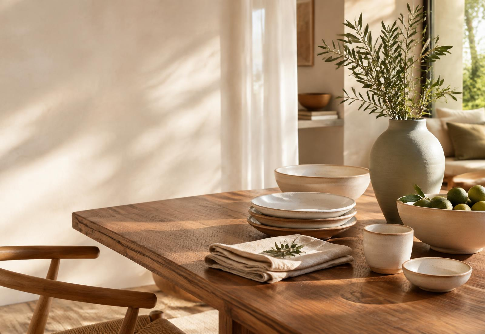

Cerâmica artesanal
Bowl Terracota
R$ 89

Casa Lume
Peças que unem beleza, funcionalidade e o melhor do fazer artesanal brasileiro.
Ver coleçãoCuradoria da casa
Cerâmica artesanal
R$ 89
Linho natural
R$ 129
Cerâmica artesanal
R$ 69
Cerâmica artesanal
R$ 149
Nova coleção
Objetos com textura, tons naturais e presença tranquila para uma casa que acolhe sem excessos.
Feito para durar
Este é um projeto demonstrativo. Produtos, preços e botões podem ser conectados a uma loja real.